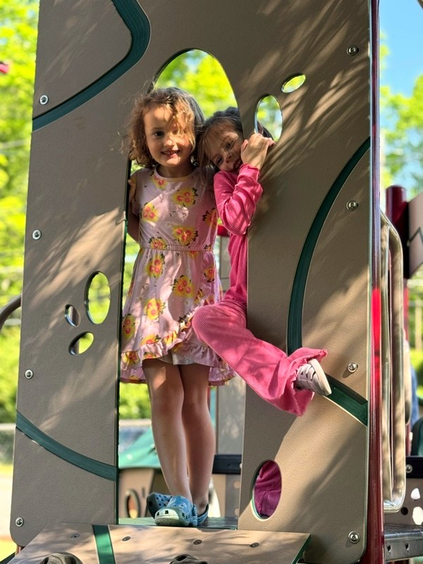
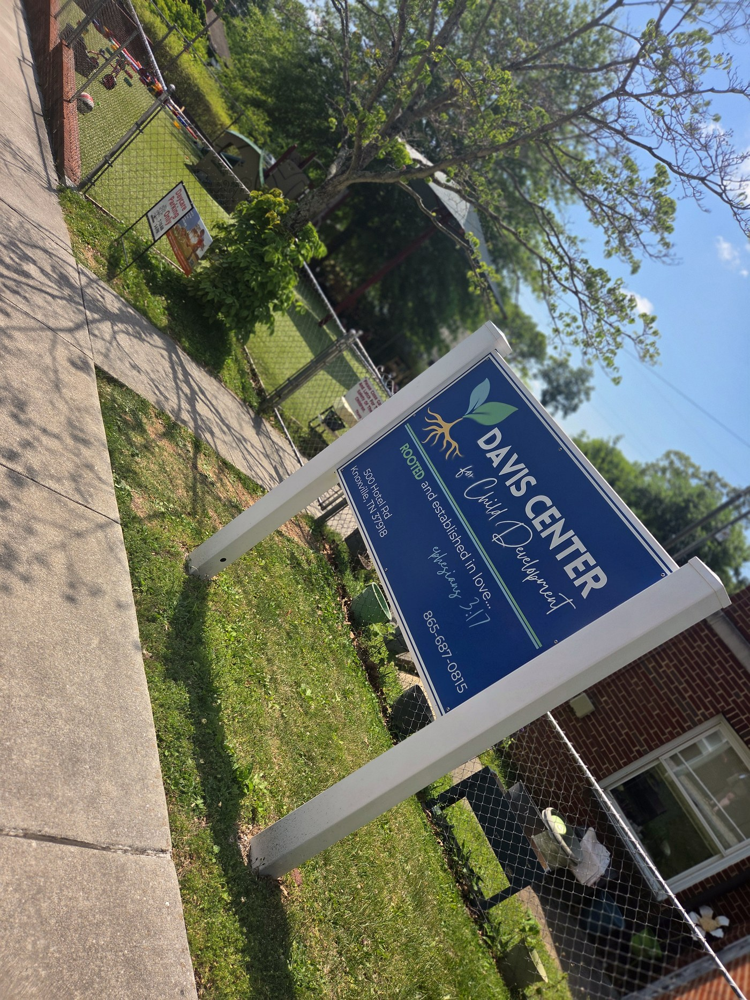

About Us
Thirty years of love,
one family at a time.
We're a faith-based, non-profit childcare center rooted in the belief that every child deserves patient, attentive, and loving care — regardless of a family's financial circumstances.
Our Mission
Quality care that serves the whole child.
The Davis Center exists to provide high-quality, full-time childcare that is accessible to working Knoxville families. We believe that the first years of a child's life matter profoundly — and that every child deserves to be known, seen, and loved well during those years.
We ground everything we do in Ephesians 3:17 — "rooted and established in love." That isn't a slogan. It shapes how our staff talks to toddlers, how we structure the day, and how we think about what a child needs to truly thrive.
As a 501(c)(3) non-profit, we reinvest everything back into the program — better staff, better environments, and tuition rates that don't force families to choose between good care and making rent.

What We Believe
The values that shape every day.
These aren't words on a wall — they're the habits and choices that define how we care for children and families.
Faith-Grounded
We believe children flourish when they're loved well. Our faith shapes our patience, our gentleness, and our commitment to every child in our care.
Attentive & Responsive
Young children communicate in small ways. We train our staff to notice, to listen, and to respond — to each child's rhythms and needs.
Rooted in Community
We've been in the same neighborhood for 30 years. We know the families we serve, and they know us. That continuity is rare, and we don't take it for granted.
Fair & Accessible
As a non-profit, we keep our tuition at or below the area average. Every family who walks through our doors deserves excellent care — not just the ones who can afford to pay more.
Year-Round Stability
Working families can't take summers off. Neither can we. We provide full-time, year-round care so parents can count on us to be open, every day.
Developmentally Focused
Our classrooms are built around how children actually develop — not a checklist. Age-appropriate environments, intentional staffing, and a steady routine that children can trust.

Our History
Same place. Same commitment. Since 1995.
The Davis Center has operated continuously since 1995 — through economic recessions, a pandemic, and decades of change in Knoxville. Through all of it, we stayed open, kept our doors accessible, and kept the same mission.
We are not a franchise. We are not backed by investors. We're a community organization that has served Knoxville families for thirty years because this work matters, and we believe it's worth doing well.
Today we serve infants through pre-kindergarten in seven dedicated classrooms. The neighborhood around us has changed. Our purpose hasn't.
Rooted and established in love. Ephesians 3:17